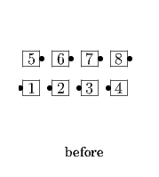
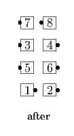

Starting formation - Generalized Columns.
Ends 1/4 To Promenade, Step Ahead, Turn another 1/4 toward their initial turning direction, and adjust to end in Parallel Lines.
Centers turn 1/4 To Promenade, Step Ahead, turn 1/4 To Promenade, and Step Ahead (to become Leaders in Parallel Lines).
 
A Reverse Polly Wally is the mirror image of Polly Wally. Everyone starts by turning 1/4 to Wrong Way Promenade.
© Copyright 2004-2017 Vic Ceder and CALLERLAB Inc., The International Association of Square Dance Callers. Permission to reprint, republish, and create derivative works without royalty is hereby granted, provided this notice appears. Publication on the Internet of derivative works without royalty is hereby granted provided this notice appears. Permission to quote parts or all of this document without royalty is hereby granted, provided this notice is included. Information contained herein shall not be changed nor revised in any derivation or publication.